<!DOCTYPE HTML PUBLIC "-//W3C//DTD HTML 3.2 Final//EN">
<HTML>
<HEAD>
<TITLE>
  2.2 基本概念
</TITLE>
<LINK REL="parent" HREF="../index.html">
<LINK REL="previous" HREF="intro.html">
<LINK REL="next" HREF="basic_func.html">
</HEAD>
<BODY>
<!-- Sakamura BTRON / BTRON3 Specification - Ukrainian Translation -->
<DIV STYLE='background:#0057b7; color:#ffd700; padding:8px 15px; font-weight:bold; font-family:sans-serif; margin-bottom:15px; border-radius:4px;'>Специфікація BTRON3 (Український переклад) | Специфікація ОС Sakamura BTRON / BTRON3</DIV>

<A href="../index.html">この章のЗмістにもどる</A><BR>
<A href="intro.html">前頁:2.1 はじめににもどる</A><BR>
<A href="basic_func.html">次頁:2.3 基本関数にすすむ</A><BR>
<HR>

<H2><A name="acy">2.2 基本概念</A></H2>

<H3><A name="acz">2.2.1 座標平面／点／長方形</A></H3>

<P>ディスプレイプリミティブで取り扱う座標系は、 16ビット整数値(- 32768 
〜32767 ) で表わされる整数座標系であり、水平座標値は右方向に増加し、垂直座標値は下方向に増加する。</P>

<P>点 (Point) は、座標系上での位置を表わすための基本的な概念であり、 以
下の構造体により定義される(基本データタイプに関しては
「<A href="../../shared_data/data_type.html">第1編 第1章 基本データタイプ</A>」を参照の事)。</P>

<PRE>
    /* 点 */
    typedef struct Point {
        H   x;      /* 水平座標値 */
        H   y;      /* 垂直座標値 */
    } PNT;
</PRE>

<P>また、長方形 (Rectangle) は、 座標系上での領域を表わすための重要な概念であり、以下の構造体により定義される。</P>

<PRE>
    /* 長方形 */
    typedef union Rectangle {
        struct {
            H   left;       /* 左の座標値 */
            H   top;        /* 上の座標値 */
            H   right;      /* 右の座標値 */
            H   bottom;     /* 下の座標値 */
        } c;
        struct {
            PNT lefttop;    /* 左上の点 */
            PNT rightbot;   /* 右下の点 */
        } p;
    } RECT;
</PRE>

<P>ここで取り扱う長方形は、実際には右と下の辺を含まない領域であり、以下に示す性質を持つことに注意が必要である。 (このように右と下の辺を含まない性質を長方形の half-open property と呼ぶ。)</P>

<UL>
 <LI>ある点(x, y) が長方形に含まれるのは、次の条件が成り立つ場合であり、
      点(lefttop)は長方形に含まれるが、点(rightbot)は含まれない。
      <PRE>
    (left &lt;= x) &amp;&amp; (x &lt; right) &amp;&amp; (top &lt;= y) &amp;&amp; (y &lt; bottom)
  </PRE>
 <LI>top ≧ bottom または left ≧ right の場合は、その長方形の領域は空である。
</UL>

<P>また、長方形の集合を表現するための長方形のリスト(RectangleList) は以下のように定義される。リストの最後の要素の next は NULL(0) となる。</P>

<PRE>
    /* 長方形リスト */
    typedef struct RectangleList {
        RectangleList   *next;      /* 次の要素へのポインタ */
        RECT             comp;      /* 要素としての長方形 */
    } RLIST;
</PRE>

    ディスプレイプリミティブで取り扱う座標系は、次項で説明するビットマップにより実際の表示上のイメージに対応付けられる。

<H3><A name="ada">2.2.2 ビットマップ</A></H3>

<H4>ビットマップ</H4>

<P>ビットマップは、 図形や文字等の表示イメージを大きさ、 および色を持った点8ピクセル)の集合として表わし、その点をメモリ上の1ビット、あるいは複数ビットに一対一対応させて、実際の表示イメージの保持／操作を行なうためのデータ構造である。</P>

<P>ビットマップ上では以下に示す図のように、1つのピクセルが整数座標系上の1つの点に対応づけられる。</P>


<A name="adb">
<CENTER>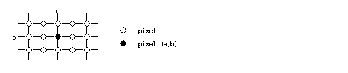</CENTER>
</A>
<CENTER>図 17 : 座標系とピクセル</CENTER>


<A name="adc">
<CENTER>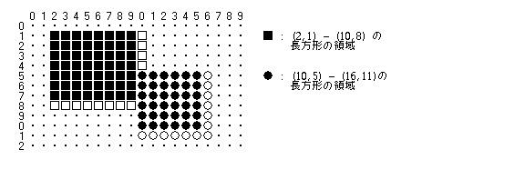</CENTER>
</A>
<CENTER>図 18 : ビットマップ上の長方形</CENTER>


<P>
ビットマップはイメージを表現するためのデータ構造であるが、実際のイメージの色、大きさ等の属性は、ビットマップ構造としては定義されず、ビットマップの対象とするデバイスの属性として定義されることになる。
</P>

<H4>ビットマップの構造</H4>

<P>
ビットマップは、基本的に連続した1次元メモリ配列を、1つの長方形領域内の点(ピクセル)の2次元配列として解釈することにより定義される。このメモリ上のビットと表示上のピクセルとの対応付けは、以下のように定義される。
</P>

<UL>
  <LI>ビットマップは、 連続したアドレス空間を持つ1つ以上のプレーンにより構成され、 各プレーン内では1つ以上のビットが1つのピクセルに対応する。 各プレーン内でのピクセル当たりのビット数をピクセルビット数と呼び、 ピクセルビット数×プレーン数、即ち、ピクセル当たりの総ビット数を深さ(depth)と呼ぶ。
  <LI>プレーン数とピクセルビット数の組み合せとしては、 以下の 4 種類が考えられる。 なお、1.以外の構成の場合、即ち深さ &gt; 1 の場合は、ビットマップではなく、ピクセルマップと呼ぶこともあるが、 ディスプレイプリミティブでは、 ピクセルマップの意味を含めてビットマップと呼ぶことにする。

      <OL>
       <LI>ピクセルビット数 = 1、プレーン数 = 1    -- 白黒
       <LI>ピクセルビット数 = 1、プレーン数 = n    -- カラー / 白黒多階調
       <LI>ピクセルビット数 = n、プレーン数 = 1    -- カラー / 白黒多階調
       <LI>ピクセルビット数 = n、プレーン数 = m    -- カラー / 白黒多階調
      </OL>
 <LI>ビットマップの最大の深さは28とする。

 <LI>横方向のピクセル数は16の倍数であり、 偶数バイト(16ビット)境界に一致する。

 <LI>メモリ上の低位アドレスのバイトの MSB (最上位ビット) が左上のピクセルに対応する。 アドレス順に右側に対応し、右側の境界に達した場合は1つ下の左端に対応する。最後のバイトの LSB (最下位ビット) が右下のピクセルに対応する。
</UL>
<P>
ビットマップは以下の構造体により定義される。
</P>
<PRE>
/* ビットマップ */
#define PLANES      (1)       /* ダミー */
typedef struct Bitmap {
    UW    planes;             /* プレーンの数 */
    UH    pixbits;            /* (境界／有効)ピクセルビット数 */
    UH    rowbytes;           /* プレーンの横幅のバイト数(偶数) */
    RECT  bounds;             /* 境界長方形(座標定義) */
    UB    *baseaddr[PLANES];  /* 開始アドレス(planes 個の配列) */
} BMP;
</PRE>

<P>planes はプレーン数を表わし、1〜28の範囲の値でなくてはいけない。また、プレーン数 × 有効ピクセルビット数(下記) は、28以下でなくてはいけない。</P>

<P>pixbits は、上位バイトがピクセルビットの境界ビット数を表わし、下位バイトが有効ビット数を表わす。  境界ビット数は、ビットマップメモリ上での1ピクセル当たりのビット数を示す1〜32の範囲の値であり、通常は2のべき乗の値である。有効ビット数は、境界ビット数のうち実際に有効な下位からのビット数を示す1〜28の範囲の値である。</P>

<P>なお、単にピクセルビット数と言った場合は、有効ビット数を示すものとし、後に述べるピクセル値は有効ビット数をもとにしている。</P>

<P>rowbytes は、1つのプレーンの横幅のバイト数を示し、必ず偶数バイトとなる。</P>

<P>bounds は、ビットマップの大きさと座標系を示す長方形で、 左上のピクセルの座標値と、右下のピクセルの座標値を指定する。これにより、ビットマップの対象とする全体の大きさを指定するとともに、 座標系の原点 (0,0) を任意の位置に設定することができる。この bounds は通常、rowbytes  で示されるビットマップのメモリ領域の大きさに一致する大きさに設定される。</P>

<P>baseaddr は、  各プレーン毎のビットマップの開始メモリアドレスを示す、planes 個の要素からなる配列であり、baseaddr の値が、NULL の場合は、 対応するプレーンが存在しないことを表わす。</P>

<A name="add">
<CENTER>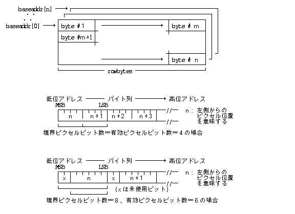</CENTER>
</A>
<CENTER>図 19 : ビットマップの構造</CENTER>


<H4>ビットマップの座標系</H4>

<P>ビットマップ上の左上のピクセルを常に(0, 0)と考えた座標値を「絶対座標」と呼び、bounds により規定される座標値、即ち、bounds.p.lefttop を左上のピクセルの座標値としたものを、「相対座標」と呼ぶ。通常は「相対座標」が使用される。</P>

<A name="ade">
<CENTER>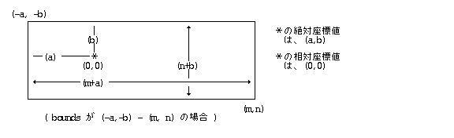</CENTER>
</A>
<CENTER>図 20 : ビットマップの座標定義</CENTER>


<H4>ピクセル値</H4>

<P>ビットマップ上で、1つのピクセルに対応する複数のビットを並べて1つの数値として見た値をピクセル値と呼ぶ。 ピクセル値は以下のように定義され、 0〜(2 ** depth −1)の範囲の値をとる。</P>

<P>ピクセル値は、そのピクセルの色や白黒の階調を表わすが、実際の色、階調との対応は、対象とするデバイスの属性として定義される。</P>

<A name="adf">
<CENTER>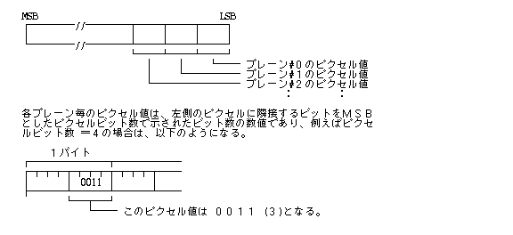</CENTER>
</A>
<CENTER>図 21 : ビットマップのピクセル値</CENTER>


<P>なお、 ディスプレイプリミティブでは depth は最大28までであり、ピクセル値として32ビットのデータを使用し、下位の depth(最大28)ビットが有効となる。</P>

<PRE>
/* ピクセル値 */
typedef     W   PIXVAL;     /* ピクセル値 */
</PRE>

<H4>圧縮ビットマップ</H4>

<P>圧縮ビットマップは、ビットマップデータを圧縮し、サイズを小さくしたもので、主にビットマップデータの保存のために使用される。</P>

<P>圧縮ビットマップは、以下のように定義される。</P>

<PRE>
/* 圧縮ビットマップ */
typedef struct CompactedBitmap {
    W       compac;     /* イメージ圧縮方法 */
    BMP     bmp;        /* ビットマップ */
} CBMP;
</PRE>

<P>compac はイメージの圧縮方法を示すもので以下のものとなる。</P>

<PRE>
/* イメージ圧縮方法 */
enum ImageCompactionMethod {
    NOCOMPAC    = 0,    /* 非圧縮 */
    MHCOMPAC    = 1,    /* MH符号 */
    MR2COMPAC   = 2,    /* MR符号 (K = 2) */
    MR4COMPAC   = 3     /* MR符号 (K = 4) */
                        /* = 4〜  : 予約  */
                        /* &lt; 0 : インプリメントに依存した特殊圧縮方法 */
};
</PRE>

<P>NOCOMPAC (非圧縮) の場合は、ビットマップの内容は通常のビットマップと全く同一となる。圧縮の場合は、ビットマップの baseaddr[] で示されるデータ部分が圧縮された形式で格納される。</P>

<UL>
 <LI>MH 符号 (MHCOMPAC)：
      <P>先頭のヘッダ部には以下の内容が入り、ヘッダ部の後にライン毎のMH符号列データが並ぶ。</P>
      <UL>
       <LI>全体のバイト数 (UW: 4バイト)
       <LI>全体のライン数 (UH: 2バイト)
       <LI>各ライン毎のデータへのヘッダ部の先頭からのバイトオフセット (UW: 4バイト)
      </UL>
    <P>各ラインのデータは、MH符号列、FILL(任意個の0)、 EOL(000000000001) の並びであり、最後のEOLが偶数バイト境界にくるようにFILLによりパッドされる。MH符号列、FILL、EOL はすべて、 低位アドレスのMSBから高位アドレスのLSBに向かう順番となる。</P>

<A name="adg">
<CENTER>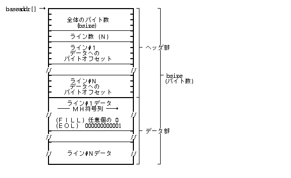</CENTER>
</A>
<CENTER>図 22 : ビットマップの座標定義</CENTER>

<BR>
 <LI>MR符号(MR2COMPAC／MR4COMPAC)：
     <P>MH符号の場合と同様であり、各ラインのデータがMR符号列となる。</P>
</UL>

<H3><A name="adh">2.2.3 カラー表現</A></H3>

<P>一般的にカラーの表示方式は、以下の2つの方法に分類される。</P>

<DL>
 <DT>固定カラー方式：
 <DD>ピクセル値が、直接実際のカラーを示す方式。
 <DT>カラーマップ方式：
 <DD>ピクセル値は、カラーマップのインデックスであり、対応するカラーマップのエントリの内容が実際のカラーを示す方式。限られたビットマップの深さで多くのカラーを表示する場合に使用される。
</DL>

<P>カラー表示の方式はデバイスに固有なものであり、デバイスごとに以下のカラー表示方式の情報を持っている。(詳細は後述)</P>

<UL>
 <LI>固定カラー／カラーマップ方式の別
 <LI>カラータイプ:
     <UL>
      <LI>白黒
      <LI>RGBカラー
      <LI>CMYカラー(プリンタ)
      <LI>その他
     </UL>
 <LI>各色要素の階調数／ビット位置
</UL>

<P>ディスプレイプリミティブでは、カラー指定の方法として、ピクセル値による直接指定と、RGB の各要素の輝度による絶対指定の 2 種類の方法が取られる。</P>

<DL>
 <DT>各種描画のカラー指定：
 <DD>ピクセル値による直接指定、および RGB による絶対指定
 <DT>カラーマップの設定：
 <DD>RGB による絶対指定
</DL>

<P>カラー指定は以下に定義される構造体により行なわれる。</P>

<PRE>
/* カラー表現 */
struct ColorDescription {
    UW  trans:1;        /* 透明 */
    UW  crep:3;         /* カラー表現 */
    UW  cval:28;        /* カラー値 */
};

typedef UW  COLOR;      /* カラー指定 */
</PRE>

<A name="adi">
<CENTER>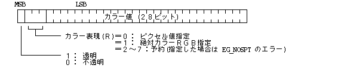</CENTER>
</A>
<CENTER>図 23 : カラー指定</CENTER>


<UL>
 <LI>透明／不透明は、 描画カラー指定にのみ使用され、透明を指定した場合は実際には描画を行なわないことを意味し、 下位31ビットの値は無視される。
  <LI>カラー値は、カラー表現により異なる意味を持つ。
     <DL>
      <DT>crep＝0
      <DD>直接ピクセル値を示す。
      <DT>crep＝1
      <DD>赤／緑／青の各色の輝度を0〜255の正規化されたレンジで示す。すなわち、0が0％、255が100％を示す。
<PRE>
        XXXX RRRRRRRR GGGGGGGG BBBBBBBB
               赤(8)    緑(8)    青(8)
</PRE>
      <DT>crep＝2〜7 予約
     </DL>
</UL>
<P>実際の描画はピクセル値により行なわれるため、描画カラーとして指定したCOLOR から実際のピクセル値への変換を行なう必要があり、この変換は以下のように行なわれる。</P>

<DL>
 <DT>crep＝0：ピクセル値指定
 <DD><P>COLOR の下位Nビットをそのままピクセル値とし、上位ビットは無視する。ここでNは、対象ビットマップの深さを意味する。</P>
 <DT>crep＞0：絶対カラー指定
 <DD><P>COLOR で指定したカラーに最も近いカラーのピクセル値とする。カラーマップ方式の場合はカラーマップの検索を行ない、指定した COLOR  に最も近い色のエントリのインデックスをピクセル値とする。</P>
  <P>固定カラー方式の場合は、COLOR での標準RGB表記に最も近い色のデバイス固有のRGB表記に変換した値をピクセル値とする。</P>
</DL>

カラーマップ方式の場合、ピクセル値 0 は白、 最大値 (2** depth−1) は黒を定義することが望ましい。

<H3><A name="adj">2.2.4 描画環境</A></H3>

<H4>描画環境</H4>

<P>ディスプレイプリミティブの実行環境を描画環境と呼ぶ。描画環境は動的に生成され、生成時に得られる描画環境IDにより識別される。実際の描画では、この描画環境IDを指定して対象とする描画環境を指定することになる。</P>

<PRE>
/* 描画環境ID */
typedef W   GID;        /* 描画環境ID */
</PRE>

1つの描画環境に対して以下のデータが対応づけられる。

<UL>
  <LI> 対象デバイス
  <LI>対象ビットマップの本体
  <LI>カラー情報
  <LI>ポインタ
</UL>

さらに、個々の描画環境ごとに以下のデータが対応づけられる。

<UL>
  <LI>対象ビットマップの座標系 (境界長方形)
  <LI>マスクピクセル値
  <LI>クリッピング領域
  <LI>文字属性 (描画位置／方向／指定／描画カラー／Управління шрифтами (Font Manager))
  <LI>文字セット
  <LI>色変換用カラー情報
</UL>

<P>異なる描画環境に対するディスプレイプリミティブの関数が同時に実行されても問題が起きないようにディスプレイプリミティブ内部で排他制御が自動的に行なわれる。ただし、対象ビットマップが重なっている場合には、重なっている部分の描画結果は保証されない。</P>

<P>逆に、同一の描画環境に対するディスプレイプリミティブの関数が同時に実行された場合の結果は保証されない。</P>

<P>描画環境の生成時には、描画対象とするデバイスを示す文字列で指定する。あらかじめディスプレイプリミティブに登録されているデバイスのみが指定可能である。</P>

<P>ディスプレイプリミティブでかならずサポートしているデバイスとして以下のものがあげらる。</P>

<UL>
 <LI> &quot;SCREEN&quot;
 <LI> &quot;MSGPNL&quot;
</UL>

<P>描画対象デバイスには、以下のデバイス固有の情報(仕様)が定義されており、これはビットマップ上に描画したイメージの具体的な表現の定義を意味する。</P>

<PRE>
    typedef struct {
        H   attr;       /* デバイスの属性 */
        H   planes;     /* プレーン数 */
        H   pixbits;    /* ピクセルビット数(境界／有効) */
        H   hpixels;    /* 横のピクセル数 */
        H   vpixels;    /* 縦のピクセル数 */
        H   hres;       /* 横の解像度 */
        H   vres;       /* 縦の解像度 */
        H   color[4];   /* カラー情報 */
        H   resv[6];    /* 予約 */
    } DEV_SPEC;
</PRE>

<UL>
  <LI>attr は、デバイスの属性を示す以下の内容である。
<PRE>
    0LMX XXXX XXXX PRRR
</PRE>
      
      <DL>
       <DT>L:
           <DD>0＝このデバイスに対して生成したデバイス描画環境レコードはロックの対象とされない。<BR>
               1＝ このデバイスに対して生成したデバイス描画環境レコードはロックの対象とされる。
        <DT>M:
           <DD>0＝ 固有イメージ領域(ビットマップ) は持っていない(デバイス描画環境は生成不可)。<BR>
               1＝ 固有イメージ領域(ビットマップ) を持っている(デバイス描画環境を生成可能)。
        <DT>P:
           <DD>0＝ カラーマップ無(直接指定)<BR>
           1＝ カラーマップ有(マップエントリ数はプレーン数×ピクセルビット数で決まる)
        <DT>R:
           <DD>0＝ 白黒<BR>
           1＝ RGBカラー<BR>
           2＝ CMY カラー<BR>
           3〜 その他
        <DT>X:
           <DD>予約
      </DL>

 <LI>planes は、デバイスに適用されるビットマップのプレーン数を示し、pixbits は、境界／有効ピクセルビット数を示すもので、BITMAP の定義と同じ意味を持つ。なお、  planes   ＜0の場合は特殊ビットマップであることを意味し、pixbits の意味はデバイスに依存する。
 <LI>hpixels と vpixels は、デバイスに適用されるビットマップの横と縦のピクセル数を示す。大きさが規定されていない場合は0となる。
 <LI>hres と vres は、デバイスに実際に出力した場合のビットマップの横と縦の解像度を示し、1センチメートルまたは1インチ当たりのピクセル数で示される。インチの場合は、負数で表わされる。 解像度が規定されていない場合は0となる。
 <LI>color[] は、カラー情報であり、attr で指定されるカラー方式によりその内容が異なる。
   <DL>
    <DT>R = (白黒)の場合
    <DD>color[0]    白黒の階調ビット数を示す。<BR>
        color[1]〜  未使用(0)
    <DT>R = 1(RGB)の場合
    <DD>color[0]    赤の階調ビット数とその位置を示す。<BR>
        color[1]    緑の階調ビット数とその位置を示す。<BR>
        color[2]    青の階調ビット数とその位置を示す。<BR>
        color[3]    未使用(0)
    <DT>R = 2(CMY)の場合
    <DD>color[0]    シアンの階調ビット数とその位置を示す。<BR>
        color[1]    マゼンタの階調ビット数とその位置を示す。<BR>
        color[2]    黄の階調ビット数とその位置を示す。<BR>
        color[3]    黒の階調ビット数とその位置を示す。
    </DL> 
</UL>

<P>下位バイトが階調ビット数を表わし、上位バイトがビット位置を表わす。マップ方式の場合は、ビット位置は意味を持たず0となり、マップ方式でない場合は、ピクセル値上でのLSBを0としたビット位置を示す。</P>

例としてピクセル値が以下のように定義されている場合は、

<PRE>
....BBBBGGGGGGRRRRRR

    color[0] = 0x0006
    color[1] = 0x0606
    color[2] = 0x0c04
</PRE>
となる。

<P>カラー情報を持たない汎用メモリ描画環境の場合には、ピクセル値とカラーとの対応は定義されないことになり、COLOR で指定されるカラーについては、透明／不透明は意味あるものとして処理されるが、カラー表現についてはピクセル値／絶対値指定にかかわらず、単にピクセルの深さでマスクを取った値をピクセル値として処理されることになる。</P>

<H4>対象ビットマップ</H4>

<P>描画環境には、生成時に指定したメモリビットマップが対応付けられ、描画環境に対する描画は、そのビットマップ上に行なわれる。</P>

<P>VRAM 等のビットマップでは特殊な構成を持つ場合があり、その場合にはプレーン数として負の特殊な値とする。この特殊な値はインプリメントに依存し、ディスプレイプリミティブの関数はあらかじめその値の意味を知っていることを前提とする。</P>

<P>プレーン数が正の値の場合は、そのビットマップのデータの意味は、標準のビットマップの定義そのものであるが、一般に主メモリ上のビットマップ以外は、ビットマップ領域のメモリ内容を直接アクセス可能であることは保証されない。</P>

<H4>カラー情報</H4>

<P>汎用メモリ描画環境には、対象とするビットマップのピクセル値の実際の意味を示すためのカラー情報を描画環境の生成時に設定することができる。</P>

<P>カラー情報が設定されている場合は、絶対RGBによるカラー指定はカラー情報に従ってピクセル値に変換されて実際の描画が行われる。カラー情報が設定されていない場合は、絶対RGBカラーによる指定は無視され、常にピクセル値とみなされて描画される。</P>

<P>ビットマップ操作関数や描画パターンで使用されるビットマップの色変換を行うため、描画環境に色変換用のカラー情報を設定することができる。
</P>

<PRE>
/* カラー指定 */
struct  ColorSpec {
    W       attr;       /* カラー属性 */
    H       info[4];    /* カラー情報 */
    COLOR   *colmap;    /* カラーマップへのポインタ */
};

typedef ColorSpec   CSPEC;      /* カラー指定 */
</PRE>

<UL>
  <LI> attr  は DEV_SPEC の attr の下位4ビットと同じ意味を持つ。上位28ビットは予約済み。

  <LI> info は attr & 0x8 が0以外(カラーマップ形式)の場合は以下の意味を持つ。
    <DL>
     <DT> info[0]
       <DD>カラーマップのエントリ数
      <DT>info[1]〜[3]
       <DD>未使用
    </DL>
   info は attr & 0x8 が0の場合は DEV_SPEC の color と同じ意味を持つ。
  <LI><P>colmap は、attr & 0x8 が 0以外場合に、実際のカラーマップへのポインタを示す。0の場合は、この値は意味を持たない。</P>
      <P>実際のカラーマップは、(最大ピクセル値＋1)個の要素からなる、COLOR 値の配列であり、 その配列のインデックス(0〜最大ピクセル値)がピクセル値となる。配列の要素は、COLOR の絶対RGB表現の値となる。</P>
</UL>

<H4>マスクピクセル値</H4>

マスクピクセル値は、描画対象とするピクセルを限定するために使用されるピクセル値であり、後述する描画モードの指定により、以下のいずれかの描画動作となる。

<OL>
  <LI>マスクピクセル値に無関係に全ピクセルを描画対象とする。
  <LI>マスクピクセル値と同一の値のピクセルのみ描画対象とする。
  <LI>マスクピクセル値と異なる値のピクセルのみ描画対象とする。
</OL>

<H4>クリッピング領域</H4>

<P>描画環境において、実際に対象ビットマップ上に描画が行なわれる領域は、対象ビットマップの境界長方形 (bounds)、フレーム長方形(FrameRect)、表示長方形(VisibleRect)、設定されたクリッピング領域に含まれ、かつ、 前置長方形リストに含まれない領域となる。</P>

<P>クリッピング領域が未定義の場合は、 対象ビットマップの境界長方形 (bounds)に含まれる領域がすべて描画対象となる。</P>

<P>クリッピング領域は、以下の任意領域構造体により定義され、その座標系は相対座標で指定される。</P>

<PRE>
/* 任意領域 */
#define NX      1   /* ダミー */
#define NS      1   /* ダミー */

struct HorizontalRegion {
    UH  nx;         /* 水平座標の数(偶数) */
    UH  x[NX];      /* 水平座標の値(nx 個の要素で値の小さい順) */
};
typedef HorizontalRegion HRGN;  /* 水平領域 */

struct GenericRegion {
    RECT    r;      /* 任意領域全体を囲む最小の長方形(相対座標系) */
    UW      ns;     /* 垂直区間数 */
    struct {
        UH      y;      /* 区間の開始垂直座標値 */
        HRGN    *hp;    /* 区間の水平領域へのポインタ */
    } s[NS];
};

typedef GenericRegion   GRGN;   /* 任意領域 */
</PRE>

<P>水平領域は1つの垂直座標値(ラスター)に対応する水平座標の領域を指定するものであり、nx は、水平座標値の個数を示し、x[0] 〜 x[nx-1] は、 水平座標値を小さい順に並べたものである。水平座標値は、任意領域全体を囲む最小の長方形の r.c.left の値を0とする非負の値で示される。</P>

<P>水平座標値は2つ1組であり、第一の水平座標値(小さい値)から、第二の水平座標値(大きい値)−1の水平座標値までが、対象領域となる。(第一の値は含まれるが、第二の値は含まれない：half-open)。</P>

<P>同一の水平座標値が2つ以上含まれていた場合、偶数回のときにはその座標値は存在しないものと見なされ、奇数回のときには1つのみ存在しているものと見なす。nx が偶数でない場合は、最後の座標値は無視される。</P>

<P>同一の水平領域を持つ連続した垂直座標の領域を(垂直)区間と呼び、任意領域は、いくつかの(垂直)区間により定義される。ns は区間の数を示し、 ns＝0の場合は、任意領域は長方形 r に等しいことを意味する。</P>

<P>s[N].y は区間 N の開始垂直座標値を示し、その区間の終了垂直座標位置は、s[N+1].y−1、または r.c.bottom−1(最後の区間の時)となる。</P>

<P>s[N]. hp は区間 N に対応する水平領域へのポインタを示す。s[N].hp＝NULLの時は、その区間は空であることを意味する。</P>

<PRE>
        r = (0, 0, 17, 15)
        ns = 11
        s[0].y = 0    s[0].hp = &(2, 5, 12)
        s[1].y = 1    s[1].hp = &(4, 3, 8,  9, 14)
        s[2].y = 2    s[2].hp = &(4, 1, 7, 10, 16)
        s[3].y = 3    s[3].hp = &(4, 0, 6, 11, 17)
        s[4].y = 4    s[4].hp = &(4, 0, 5, 12, 17)
        s[5].y = 5    s[5].hp = &(4, 0, 4, 13, 17)
        s[6].y = 10   s[6].hp = &(4, 0, 5, 12, 17)
        s[7].y = 11   s[7].hp = &(4, 0, 6, 11, 17)
        s[8].y = 12   s[8].hp = &(4, 1, 7, 10, 16)
        s[9].y = 13   s[9].hp = &(4, 3, 8,  9, 14)
        s[10].y = 14  s[10].hp = &(2, 5, 12)
</PRE>

<A name="adk">
<CENTER>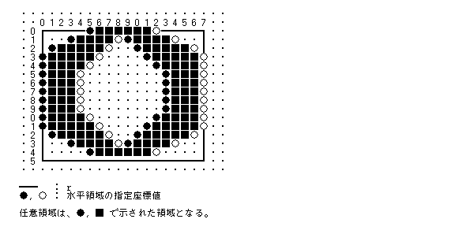</CENTER>
</A>
<CENTER>図 24 : 任意領域の例−1</CENTER>

<PRE>
        r = (x0, y0, x3, y3)
        ns = 3
        s[0].y = y0 s[0].hp = &(2, x0, x2)
        s[1].y = y1 s[1].hp = NULL
        s[2].y = y2 s[2].hp = &(2, x1, x3)
</PRE>

<A name="adl">
<CENTER>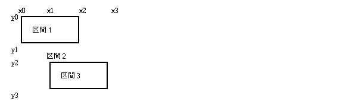</CENTER>
</A>
<CENTER>図 25 : 任意領域の例−2</CENTER>

<PRE>
        r = (x0, y0, x4, y4)
        ns = 4
        s[0].y = y0 s[0].hp = &(2, x0, x3)
        s[1].y = y1 s[1].hp = &(2, x0, x4)
        s[2].y = y2 s[2].hp = &(2, x1, x4)
        s[3].y = y3 s[3].hp = &(2, x1, x2)
</PRE>

<A name="adm">
<CENTER>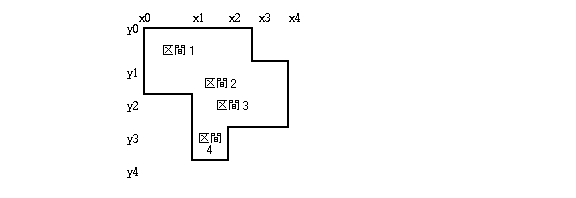</CENTER>
</A>
<CENTER>図 26 : 任意領域の例−3</CENTER>


<A name="adn">
<CENTER>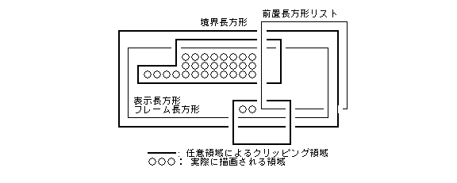</CENTER>
</A>
<CENTER>図 27 : クリッピング領域</CENTER>


<H4>描画モード</H4>

<P>実際の描画は、図形描画／文字描画時に指定した描画モードに従って行なわれる。</P>

<P>描画モードは、以下の形式の32ビットデータで指定される。</P>

<PRE>
    0000 0000 0000 0000 0000  PPCF MMMM MMMM

        M: 描画演算モード指定
        F: ビットマップ形式変換指定
        C: カラー変換指定
        P: マスクピクセル指定
</PRE>

<P>描画演算モードは、描画の対象とするピクセルに、書き込むべきピクセル値(src)と 既に現在のピクセル値(dest)と、描画後のピクセル値(result)との関係を規定するものであり、以下に示すものが用意されている。</P>

<PRE>
/* 描画演算モード */
enum DrawingCopyMode {
    /* ピクセル値のビット単位の論理演算 */
    G_STORE = 0,    /* (src)        --&gt;  (result) */
    G_XOR   = 1,    /* (src) XOR (dest) --&gt;  (result) */
    G_OR    = 2,    /* (src) OR  (dest) --&gt;  (result) */
    G_AND   = 3,    /* (src) AND (dest) --&gt;  (result) */
    G_CPYN  = 4,    /* NOT (src)        --&gt;  (result) */
    G_XORN  = 5,    /* NOT (src) XOR (dest) --&gt;  (result) */
    G_ORN   = 6,    /* NOT (src) OR  (dest) --&gt;  (result) */
    G_ANDN  = 7,    /* NOT (src) AND (dest) --&gt;  (result) */
    G_NOP   = 8     /* (dest)       --&gt;  (result) */
};
</PRE>

<P>ビットマップ形式変換指定は、ソースとディスティネーションのビットマップの形式(プレーン数 、 ピクセルビット数)が異なる場合は以下に示す変換を行なうことを指定する。</P>

<UL>
  <LI>変換後の双方の下位Nビットのピクセル値が等しくなるように変換する。ここで、Nは、ソースとディスティネーションの depth の最小値を意味する。
  <LI>ビットマップの操作を行う関数に適用されるほか、描画パターン(後述)として指定するビットマップ(MPAT)の形式変換としても適用される。
<PRE>
/* ビットマップ形式変換 */
enum BitMapFormConversion {
    G_CVFORM    = 0x0100        /* ビットマップ形式変換 */
};
</PRE>
</UL>

カラー変換指定は、ソースとディスティネーションのカラー表現(カラー情報、カラーマップ)が異なる場合は以下に示す変換を行なうことを指定する。

<UL>
  <LI>どちらか一方のカラー情報が設定されていない場合は変換されない。
  <LI>ソースのピクセル値を絶対カラーに変換し、その絶対カラーに最も近い絶対カラーに対応するディスティネーションのピクセル値に変換する。
  <LI>ビットマップの操作を行う関数に適用されるほか、描画パターン(後述)として指定するビットマップ(MPAT)のカラー変換としても適用される。
<PRE>
/* カラー変換 */
enum ColorConversion {
    G_CVCOLOR   = 0x0200        /* カラー変換 */
};
</PRE>
</UL>

<P>マスクピクセル指定は、描画環境に定義されたマスクピクセル値の効果を指定する。</P>

<PRE>
/* マスクピクセル指定 */
enum MackPixelMode {
    G_MASK      = 0x0400 /* マスクピクセル値と同一の値の dest ピクセルのみ描画 */
    G_MASKN     = 0x0800 /* マスクピクセル値と異なる値の dest ピクセルのみ描画 */
};

/* 描画モード */
typedef  W      DCM;            /* 描画モード */
</PRE>

<H4>描画パターン</H4>

<P>描画パターンは、描画の対象となるピクセルに書き込むピクセル値を指定するために使用されるデータであり、任意の大きさの長方形のデータとして定義される。</P>

<P>描画対象のビットマップの境界長方形(bounds)の原点(0,0) に描画パターンデータの左上の点を揃えて、規則正しくタイルを詰めるように境界長方形の全域に置いた場合、描画の対象となるピクセルの位置のピクセル値が書き込むべきピクセル値となる。</P>

<A name="ado">
<CENTER>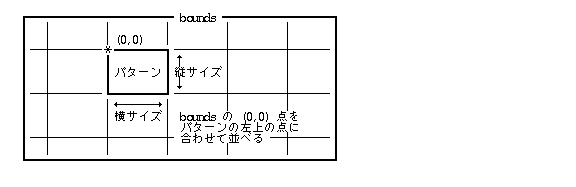</CENTER>
</A>
<CENTER>図 28 : 描画パターンの配置</CENTER>


<P>描画パターンは、以下の3種類の方法により指定することができる。</P>

<OL>
  <LI><P>マスクデータ、 前景色、背景色 により描画パターンを指定する。前景色、および背景色はそれぞれ透明とすることが可能であり、透明を含めた2色までの混合パターンが指定できる。</P>
  <LI><P>ビットマップデータにより描画パターンを指定する。指定したビットマップ上の左上隅の正方形をパターンとして指定するため、任意の色の混合パターンが可能となる。また、別にマスクデータが指定可能であり、これによりパターンの一部を透明とする事ができる。</P>
  <LI><P>上記1または2の方法で定義したパターンをより高速に描画するために内部形式に変換したものを指定する。この場合は、あらかじめ対象とする描画環境に対して、使用する描画パターン(上記1,2)を、指定したメモリ領域(通常はПроцеси та потокиのローカルメモリ領域)上に内部パターンイメージとして生成しておく必要がある。</P>
      <P>内部パターンイメージの形式とサイズは、描画環境、パターンタイプ、パターンのサイズ、およびインプリメントに依存する。内部パターンイメージへの変換関数、および内部パターンイメージの大きさを得るための関数が用意されている。</P>
</OL>

<P>描画パターンは以下に示すデータにより描画時に指定することになる。</P>

<PRE>
/* 描画パターン */
typedef W       PatKind;    /* パターンタイプ */

union pattern {
    struct {
        PatKind kind;       /* パターンタイプ(＝0) */
        UH      hsize;      /* パターンの横サイズ(ピクセル数) */
        UH      vsize;      /* パターンの縦サイズ(ピクセル数) */
        COLOR   fgcol;      /* 前景色 */
        COLOR   bgcol;      /* 背景色 */
        UB      *mask;      /* パターンマスクデータへのポインタ */
    } spat;
    struct {
        PatKind kind;       /* パターンタイプ(＝1) */
        UH      hsize;      /* パターンの横サイズ(ピクセル数) */
        UH      vsize;      /* パターンの縦サイズ(ピクセル数) */
        UB      *mask;      /* パターンマスクデータへのポインタ */
        BMP     *bmap;      /* ビットマップへのポインタ */
    } mpat;
    struct {
        PatKind kind;       /* パターンタイプ(＝2) */
        UH      hsize;      /* パターンの横サイズ(ピクセル数) */
        UH      vsize;      /* パターンの縦サイズ(ピクセル数) */
        UB      *pat;       /* 内部パターンイメージへのポインタ */
    } ipat;
}

typedef  Pattern    PAT     /* 描画パターン */
</PRE>

<DL>
  <DT>kind：
  <DD>パターンのタイプを示す以下の値である。<BR>
        ＝0  ： spat タイプ<BR>
        ＝1  ： mpat タイプ<BR>
        ＝2  ： ipat タイプ<BR>
        ＝3〜： 予約 (指定した場合は、EG_NOSPT のエラーとなる)
  <DT>hsize / vsize ：
  <DD>hsize は、パターンの横サイズ、vsize はパターンの縦サイズを、ピクセル数で表わしたものである。
  <DT>fgcol / bgcol：
  <DD>fgcol はパターンマスクデータの&quot;1&quot;の部分の色を指定し、bgcol は&quot;0&quot;の部分の色を指定する。fgcol および bgcol ＜0の場合は、 それぞれ透明を示す。
  <DT>mask：
  <DD>以下の形式でパターンマスクイメージを示す。即ち、パターンサイズで示される長方形が入る最小のビットマップデータ(ピクセルビット数＝1)である。
  <UL>
    <LI>mpat  形式の場合、&quot;0&quot;の部分は描画を行なわず、透明とすることを意味する。
    <LI>また、mask＝ NULL の場合は、透明部分は存在しないことを意味する。
    <LI>spat 形式の場合は、NULL であってはいけない。
  </UL>

<A name="adp">
<CENTER>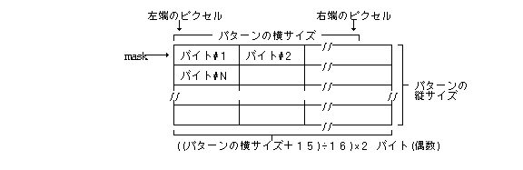</CENTER>
</A>
<CENTER>図 29 : パターンマスクの構成</CENTER>


    <P>なお、以下のパターンマスクデータが組込みで用意されているため mask として使用することができる。(これらは、パターンのサイズに無関係に使用できる。)</P>

<PRE>
/* 標準パターンマスクポインタ */
enum StdPatternMask {
    _FILL0  = (1),  /*   0  % 塗り潰し */
    _FILL12 = (2),  /*  12.5% 塗り潰し */
    _FILL25 = (3),  /*  25  % 塗り潰し */
    _FILL50 = (4),  /*  50  % 塗り潰し */
    _FILL75 = (5),  /*  75  % 塗り潰し */
    _FILL87 = (6),  /*  87.5% 塗り潰し */
    _FILL100 = (7)  /* 100  % 塗り潰し */
};

#define FILL0       ((B*)_FILL0)
#define FILL12      ((B*)_FILL12)
#define FILL25      ((B*)_FILL25)
#define FILL50      ((B*)_FILL50)
#define FILL75      ((B*)_FILL75)
#define FILL87      ((B*)_FILL87)
#define FILL100     ((B*)_FILL100)
</PRE>

 <DT>bmap：
 <DD>指定したビットマップの左上隅のパターンサイズで定義された長方形部分をパターンとみなす。 bounds はパターンサイズより小さくてはいけない。また、rowbytes  はパターンサイズ以上でもよい。

 <DD>ビットマップの形式(プレーン数、ピクセルビット数)が対象とする描画環境のビットマップ形式と同一でない場合、描画時に形式変換指定、(色変換指定)を行う必要がある。

<A name="adq">
<CENTER>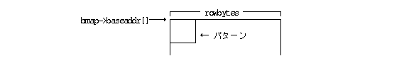</CENTER>
</A>
<CENTER>図 30 : ビットマップでのパターン指定</CENTER>

    <DT>pat：
    <DD>変換した内部パターンイメージへのポインタである。
</DL>

標準パターンとして以下のパターンが用意されている。

<PRE>
/* 標準パターンポインタ */
enum StdPattern {    /* すべて、前景色：黒、背景色：白 */
    _WHITE0   = (1), /*   0  % 塗り潰し */
    _BLACK12  = (2), /*  12.5% 黒塗り潰し */
    _BLACK25  = (3), /*  25  % 黒塗り潰し */
    _BLACK50  = (4), /*  50  % 黒塗り潰し */
    _BLACK75  = (5), /*  75  % 黒塗り潰し */
    _BLACK87  = (6), /*  87.5% 黒塗り潰し */
    _BLACK100 = (7)  /* 100  % 黒塗り潰し */
};

#define WHITE0      ((PAT*)_WHITE0)
#define BLACK12     ((PAT*)_BLACK12)
#define BLACK25     ((PAT*)_BLACK25)
#define BLACK50     ((PAT*)_BLACK50)
#define BLACK75     ((PAT*)_BLACK75)
#define BLACK87     ((PAT*)_BLACK87)
#define BLACK100    ((PAT*)_BLACK100)
</PRE>

<H4>線属性</H4>

<P>直線、弧や閉じた図形の枠の描画の場合は、描画する線の属性を以下の形で指定することができる。</P>

<PRE>
    0000  0000  0000 0000 TTTT TTTT WWWW WWWW

        W: 線幅 (下位8ビット符号無し) (0〜255)
           線の幅(太さ)をピクセル数で指定したもの

        T: 線種 (上位8ビット符号無し) (0〜5,255)
           以下に示す線種を表わす番号


/* 線種 */
enum LineKind {
    LN_SOLID    = 0,    /* 実線 */
    LN_DASH     = 1,    /* 破線 */
    LN_DOT      = 2,    /* 点線 */
    LN_DDASH    = 3,    /* 一点鎖線 */
    LN_DDDASH   = 4,    /* 二点鎖線 */
    LN_LDASH    = 5,    /* 長破線 */
    /*  予約    6〜254   (指定した場合は、EG_NOSPT のエラー) */
    LN_MASK     = 255   /* 指定マスク */
};


/* 線属性 */
typedef W       LATTR;  /* 線属性 */
</PRE>

<P>描画環境には、線マスクパターンを登録しておくことが可能であり、T = 255の場合は、登録しておいた線マスクパターンを使用した線種が適用される。この線マスクパターンはデフォールトでは実線となっている。</P>

<P>線マスクパターンは、線幅1の時に描画対象となるピクセルを&quot;1&quot;のビットで示した周期的なマスクパターンとして定義され、周期の単位として8〜64ピクセルまで、8ピクセル単位で指定することができる。即ち、1〜8バイトまでバイト配列により定義される。</P>

<P>なお、太い線幅で描画した場合は、定義したパターンは自然な形で拡大されて描画されることになる。</P>

<A name="adr">
<CENTER>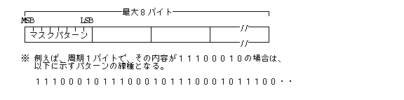</CENTER>
</A>
<CENTER>図 31 : 線マスクパターン</CENTER>


<H3><A name="ads">2.2.5 文字描画</A></H3>

<H4>文字描画カラー</H4>

<P>文字描画は指定した文字に対応する文字イメージデータを描画することにより行なわれる。文字イメージデータは、文字(前景)部分と背景部分からなる単一プレーンのビットマップであり、文字部分と背景部分をそれぞれ何色で描画するかの以下の2種類の文字描画カラーの指定が必要になる。</P>

<UL>
  <LI>文字前景色 (chfgc)： 文字イメージデータの文字(前景)部分(&quot;1&quot;の部分)に対しての色指定。
  <LI>文字背景色 (chbgc)： 文字イメージデータの背景部分(&quot;0&quot;の部分) に対しての色指定。
</UL>

<P>実際の文字描画は文字描画カラーに従って以下に示す方法で行なわれる。</P>

<DL>
  <DT>文字部分：
  <DD><P> chfgc≧0： 文字前景色をピクセル値として各プレーンに対して、文字描画演算指定に従って描画する。</P>
      <P>chfgc＜0： 描画を行なわない(透明)</P>
  <DT>背景部分：
  <DD><P>chbgc≧0： 文字背景色をピクセル値として各プレーンに対して、文字描画演算指定に従って描画する。</P>
      <P>chbgc＜0： 描画を行なわない(透明)</P>
</DL>

<A name="ads">
<CENTER>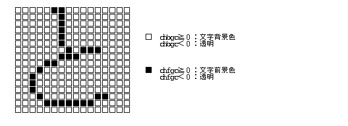</CENTER>
</A>
<CENTER>図 32 : 文字描画カラー</CENTER>


<P>描画環境を生成した時点のデフォールトの文字描画カラーは、文字背景色は白(カラー情報を持たない場合は0)、文字前景色は黒(カラー情報を持たない場合は最大ピクセル値)となる。</P>

<H4>文字描画位置／方向</H4>

<P>描画環境には、文字描画の際に使用される、文字描画位置、文字描画方向、文字間隔 のデータが保持されている。</P>

<P>文字描画位置は、次に描画する文字の座標位置であり、文字(列)を描画した後は、自動的に次の描画位置に更新される。</P>

<P>文字描画方向は、文字の描画方向を指定するものであり、以下の値で表される。文字描画方向により、文字イメージ矩形(文字枠)のどの位置を文字描画位置とするかが一意的に決定される。</P>

<PRE>
/* 文字描画方向 */
enum CharacterDirection {
    TORIGHT = 0;  /* 右向き(文字枠のベースラインの左端が描画位置) */
    TOLEFT  = 1;  /* 左向き(文字枠のベースラインの右端が描画位置) */
    TOUP    = 2;  /* 上向き(文字枠の左上の点が描画位置) */
    TODOWN  = 3;  /* 下向き(文字枠の左下の点が描画位置) */
    TOARB   = 4;  /* 任意の向き(文字枠の左上の点が描画位置) */
};
</PRE>

<P>文字間隔は、文字と文字の間隔を指定するものであり、以下の構造体データにより指定される。</P>

<PRE>
/* 文字間隔 */
struct SignedGap {
    H   dir;        /* 方向 */
    UH  gap;        /* 文字間隔 */
}
typedef SignedGap   SGAP;   /* 文字間隔 */

struct CharacterGap {
    SGAP    hgap;       /* 水平文字間隔 */
    SGAP    vgap;       /* 垂直文字間隔 */
    SGAP    hspgap;     /* 空白水平間隔 */
    SGAP    vspgap;     /* 空白垂直間隔 */
};
typedef CharacterGap    CGAP;   /* 文字間隔 */
</PRE>

<DL>
  <DT>水平文字間隔 (hgap)：
  <DD>水平方向の文字間隔<BR>
      文字描画方法が、TOUP／TODOWN  の場合は無視される。
  <DT>垂直文字間隔 (vgap)：
  <DD>垂直方向の文字間隔<BR>
      文字描画方法が、TORIGHT／TOLEFT の場合は無視される。
  <DT>空白水平間隔 (hspgap)：
  <DD>空白文字の直後に追加される水平方向の文字間隔文字描画方法が、TOUP／TODOWN／TOARB の場合は無視される。
  <DT>空白垂直間隔 (vspgap)：
  <DD>空白文字の場合に追加される垂直方向の文字間隔文字描画方法が、 TORIGHT／TOLEFT／TOARB の場合は無視される。
</DL>

<P>水平／垂直文字間隔は、文字描画方向が TOARB 以外の場合は、 文字枠の端と次の文字枠の端との間隔を示すが、TOARB の場合は、文字描画位置と次の文字描画位置の間隔を示す。</P>

<P>空白水平／垂直間隔は、 空白文字(可変幅空白、コード＝0x20) の直後に追加される文字間隔を示し、空白文字(可変幅空白)の幅、または高さを変更することに相当する。</P>

<P>文字間隔指定、SGAP の要素は以下の意味を持つ。</P>

<DL>
  <DT>dir
    <DD>＝ 0：文字間隔を文字描画方向にとる。<BR>
        ≠ 0：文字間隔を文字描画方向の反対方向にとる。 (重なって描画される)
  <DT>gap
    <DD>文字間のピクセル値を絶対値、または文字幅の比例値で指定する。
<PRE>
  絶対ピクセル数指定： 1NNN NNNN NNNN NNNN
      文字間隔はNピクセル数

  文字サイズ比例指定： 0AAA AAAA BBBB BBBB
</PRE>
      <P>文字間隔は、 文字幅(水平方向の時) または文字高さ(垂直方向の時)×Ａ／Ｂのピクセル数。(Ｂ＝0の時は比率1とみなす)文字幅、文字高さが固定長さでない場合は、最大幅、最大高さを基準とする。</P>
</DL>

<P>文字間隔の指定により、文字枠と次の文字枠の間に隙間ができる場合、その隙間には何も描画されないため、注意が必要である。</P>

<P>文字描画位置は文字を描画した後、以下に示すように更新される。</P>

<DL>
  <DT>水平位置：
  <DD>TORIGHT ： 文字幅+水平文字間隔+[空白水平間隔] だけ増加<BR>
      TOLEFT  ： 文字幅+水平文字間隔+[空白水平間隔]だけ減少<BR>
      TODOWN  ： 変化しない<BR>
      TOUP    ： 変化しない<BR>
      TOARB   ： 水平文字間隔だけ増加
  <DT>垂直位置：
  <DD>TOLEFT  ： 変化しない<BR>
      TORIGHT ： 変化しない<BR>
      TODOWN  ：  文字高さ+垂直文字間隔+[空白垂直間隔]だけ増加<BR>
      TOUP    ： 文字高さ+垂直文字間隔+[空白垂直間隔]だけ減少<BR>
      TOARB   ： 垂直文字間隔だけ増加
</DL>
<UL>
 <LI>[空白水平／垂直間隔]は可変幅空白文字を描画した場合のみ適用される。
</UL>

<A name="adt">
<CENTER>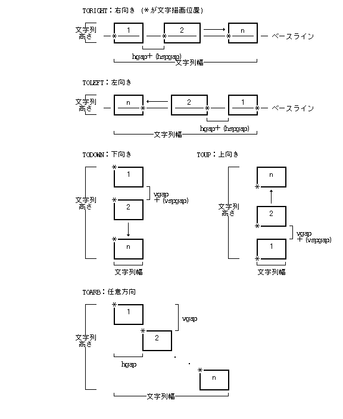</CENTER>
</A>
<CENTER>図 33 : 文字描画方向／文字間隔</CENTER>


<P>描画環境を生成した時点では、以下のデフォールト値が設定される。</P>

<DL>
  <DT>文字描画位置:
  <DD>(0,0)
  <DT>文字描画方向:
  <DD>TORIGHT (0)
  <DT>文字間隔:
  <DD>すべて0
</DL>

<H4>文字Управління шрифтами (Font Manager)</H4>

<P>文字描画で使用する文字Управління шрифтами (Font Manager)は、以下のУправління шрифтами (Font Manager)指定データにより指定される。このУправління шрифтами (Font Manager)指定により、Управління шрифтами (Font Manager)の種類、字の太さ等の属性、および文字サイズ／変形の指定を同時に行なう。指定できる文字サイズの最大はインプリメントに依存する。</P>

<PRE>
/* Управління шрифтами (Font Manager)指定 */
typedef struct ExtendFontSpecifier {
    TC    name[L_FONTFAMNM];    /* Управління шрифтами (Font Manager)ファミリ名 */
    UW    fclass;               /* Управління шрифтами (Font Manager)クラス */
    UW    attr;                 /* Управління шрифтами (Font Manager)属性 */
    SIZE  size;                 /* 文字サイズ */
} FSSPEC;
</PRE>

<P>また、指定したУправління шрифтами (Font Manager)に関する以下の情報を得ることができる。</P>

<PRE>
/* Управління шрифтами (Font Manager)情報 */
struct FontInfo {
    UH      height;     /* 最大文字高 (文字サイズ) */
    UH      width;      /* 最大文字幅 */
    UH      base;       /* ベース位置 */
    UH      leading;    /* レディング */
};

typedef FontInfo    FNTINFO;    /* Управління шрифтами (Font Manager)情報 */
</PRE>

<P>文字の太さ、幅、斜体(イタリック)、袋文字 等に関しては、Управління шрифтами (Font Manager)属性として指定することにより描画することが可能であるが、下線、上線、網掛け、反転、上付き、下付き、ルビ 等の処理はディスプレイプリミティブとしてはサポートしてしないため、アプリケーション側で行なう必要がある。</P>

<P>なお、 Управління шрифтами (Font Manager)に関する詳細は「<a href="../shell/font_mgr.html#amc">第3章 3.9 Управління шрифтами (Font Manager)マネージャ</A>」を参照のこと。</P>

<PRE>
/* 文字コード */
typedef UH  TC      /* 文字コード(1文字) */
</PRE>
<HR>
<A href="../index.html">この章のЗмістにもどる</A><BR>
<A href="intro.html">前頁:2.1 はじめににもどる</A><BR>
<A href="basic_func.html">次頁:2.3 基本関数にすすむ</A><BR>
</BODY>
</HTML>
